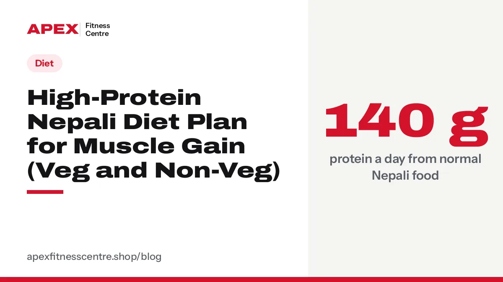
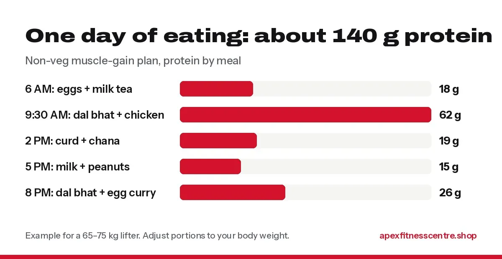
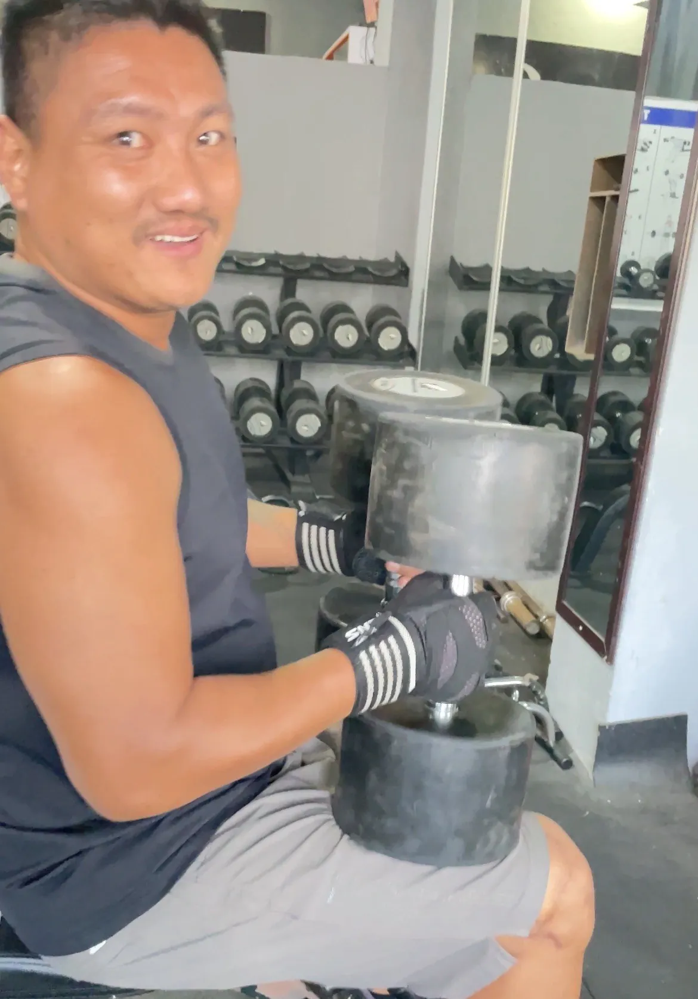

High-Protein Nepali Diet Plan for Muscle Gain (Veg and Non-Veg)
A simple Nepali diet plan for muscle gain with dal bhat, eggs, chicken, paneer and soybean. Two full-day menus with about 125 to 140 g of protein.

You can build muscle on normal Nepali food. You do not need expensive imported meals or six shakes a day. The secret is simple: keep your dal bhat, but make the protein bigger, eat a little more overall, and train hard and regularly.
Below are two full-day meal plans, one non-veg and one vegetarian, each with about 125 to 140 grams of protein. That suits someone weighing around 65 to 75 kg who lifts weights 4 to 6 days a week.
The 3 rules of a muscle-gain diet
- Eat enough protein. Lifters are commonly advised to eat about 1.6 to 2.2 g of protein per kg of body weight every day. At 70 kg, that is roughly 110 to 155 g. Read how much protein you need for the full explanation.
- Eat a little more than you burn. Muscle needs extra energy to grow. If your weight does not move for 2 to 3 weeks, add a little more food, such as an extra half plate of rice or a glass of milk.
- Spread protein across the day. Three or four meals with protein work better than one huge meal.
Plan 1: Non-veg (about 140 g protein)
| Time | Meal | Protein (approx.) |
|---|---|---|
| 6:00 AM | Milk tea + 3 boiled eggs + 1 banana | 18 g |
| 9:30 AM | Khana: 1½ plates rice, 1 bowl thick dal, 150 g chicken curry, saag, tarkari | 62 g |
| 2:00 PM | 1 bowl curd + 1 bowl boiled chana (chana chatpate style) | 19 g |
| 5:00 PM (after gym) | 1 glass milk + a handful of peanuts | 15 g |
| 8:00 PM | Khana: 1 plate rice, 1 bowl dal, 2-egg curry, tarkari | 26 g |
| Total | about 140 g |

Most of the protein comes from the two dal bhat meals when the protein portion is big.Swaps: fish or buff instead of chicken; egg bhurji instead of boiled eggs; a whey shake (about 20 to 25 g protein per scoop, check your label) instead of milk after the gym.

Plan 2: Vegetarian (about 125 g protein)
| Time | Meal | Protein (approx.) |
|---|---|---|
| 6:00 AM | 1 glass milk + 1 bowl boiled chana | 20 g |
| 9:30 AM | Khana: 1½ plates rice, 1 bowl thick dal, 100 g paneer (tarkari or chilli), saag, 1 bowl curd | 42 g |
| 2:00 PM | Soybean chunks sadeko (50 g dry weight) | 25 g |
| 5:00 PM (after gym) | 1 glass milk + a handful of peanuts | 15 g |
| 8:00 PM | 3 roti + 1 bowl rajma or chana + tarkari | 22 g |
| Total | about 125 g |
Swaps: tofu instead of paneer; mixed dal (kwati) instead of rajma; high-protein oats with milk for breakfast on busy mornings.
Vegetarians can absolutely build muscle. The key foods are milk, curd, paneer, soybean chunks, chana, rajma and dal, eaten at every meal.
Protein in common Nepali foods
| Food | Amount | Protein (approx.) |
|---|---|---|
| Egg | 1 large | 6 g |
| Chicken breast (cooked) | 100 g | 30 g |
| Paneer | 100 g | 18 g |
| Soybean chunks (dry) | 50 g | 25 g |
| Milk | 1 glass (250 ml) | 8 g |
| Curd | 1 bowl (200 g) | 7 g |
| Thick dal | 1 bowl | 8 to 10 g |
| Chana or rajma (cooked) | 1 bowl | 12 to 15 g |
| Peanuts | 30 g | 7 g |
| Rice (cooked) | 1 plate | 5 to 6 g |
Numbers are rounded estimates. They change with brand, recipe and portion size.
Cheap protein on a budget
If money is tight, these give the most protein per rupee in Nepal:
- Soybean chunks: one of the cheapest protein sources available
- Eggs: cheap, easy and high quality
- Chana, rajma and dal: cheap, filling and good with rice
- Milk and curd: easy to add to any meal
Whey protein is convenient, but it is not essential. Use it only when food alone does not get you to your number.
Common mistakes
- Eating only more rice. You gain weight, but not much muscle. Increase protein first.
- Skipping breakfast before morning training. Even a glass of milk and two eggs helps.
- Too much junk “bulking”. Momo, chowmein and samosa every day add fat faster than muscle.
- Not sleeping. Muscle grows when you recover. Aim for 7 to 9 hours.
- Not tracking. Weigh yourself once a week, same day, same time. Aim for slow, steady gain.
Frequently asked questions
Can I gain muscle with dal bhat?
Yes. Dal bhat gives energy and some protein. Add a bigger protein portion, such as eggs, chicken, paneer, soybean or extra dal, and train regularly.
How much weight should I gain per month?
For most people, slow gain is better: roughly 0.5 to 1 kg per month after the first few weeks. Faster gain is usually more fat.
Do I need whey protein to build muscle?
No. Many people reach their protein target with food. Whey is just a convenient way to fill a gap.
Is soybean bad for men?
Normal food amounts of soy, like soybean chunks a few times a week, are considered safe for men and do not lower testosterone in a meaningful way, based on human studies.
What should I eat right after the gym?
Any meal or snack with protein and some carbohydrate: milk and banana, curd and chiura, eggs and roti, or a whey shake.
Sources
- International Society of Sports Nutrition position stand: protein and exercise (Jäger et al., 2017)
- Protein supplementation and resistance training gains: systematic review and meta-analysis (Morton et al., British Journal of Sports Medicine, 2018)
General information, not medical advice. If you have diabetes, kidney disease or another condition, ask your doctor before changing your diet.
General information, not medical advice. Ask a doctor if you have a health condition. Results vary from person to person.
Comments
Loading comments…